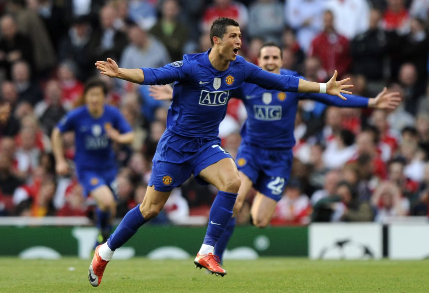
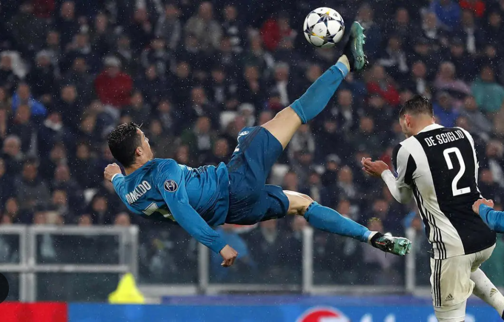
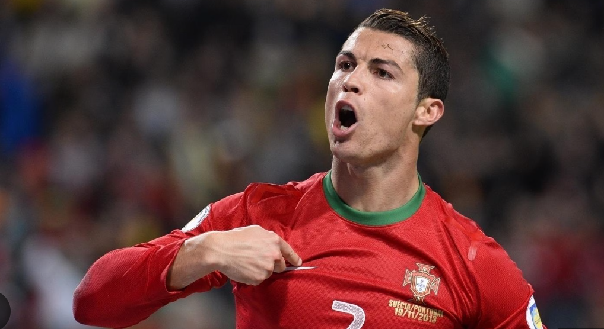

Memorable Games of Cristiano Ronaldo
Top Performances
-
Champions League 2009 Semi-Final vs. Arsenal – Ronaldo put on a masterclass, scoring two of the three goals that sealed Manchester United's 3-1 victory. His first was a thunderous free-kick from 40 yards out, a strike of sheer power and precision that left Arsenal's goalkeeper, Manuel Almunia, with no chance. Moments later, he added a second with a lightning-fast counter-attack, sprinting the length of the field before slotting the ball home with ice-cold composure. onaldo's brilliance not only secured United’s place in the final but also underscored his reputation as one of football’s deadliest attackers on the biggest stage.
 -
Champions League 2018 Quarter-Final vs. Juventus – Ronaldo delivered a breathtaking overhead kick that not only stunned the Juventus fans but also showcased his incredible athleticism and skill. This sensational goal was a key highlight of the match, contributing to Real Madrid's commanding 3-0 victory. The sheer audacity of his strike exemplified Ronaldo's ability to perform on the grandest stages, further solidifying his legacy as one of the greatest players in football history.
 -
World Cup Qualifiers 2013 Playoff vs. Sweden – Ronaldo delivered a sensational hat-trick, showcasing his unparalleled skill and determination to secure Portugal’s place in the 2014 World Cup. Each of his three goals was a testament to his striking prowess, with the decisive effort coming in a thrilling 3-2 victory over Sweden. Ronaldo's remarkable performance not only demonstrated his ability to rise to the occasion but also solidified his status as a national hero, leading his country to football's biggest stage.

Game Stats Comparison
| Opponent | Goals | Assists | Result |
|---|---|---|---|
| Arsenal (2009) | 1 | 1 | 3-1 Win |
| Juventus (2018) | 2 | 0 | 3-0 Win |
| Sweden (2013) | 3 | 0 | 3-2 Win |